ETC5512
Case study: US air traffic
Lecturer: Lecturer: Kate Saunders
Department of Econometrics and Business Statistics
- ETC5512.Clayton-x@monash.edu
- Wild Caught Data
- wcd.numbat.space
This is a case study using the US airlines database
Motivation
American Statistical Association Statistical Graphics and Computing Sections 2009 Data Expo provided all of the commercial flight records for air travel in the USA from October 1987 to April 2008.
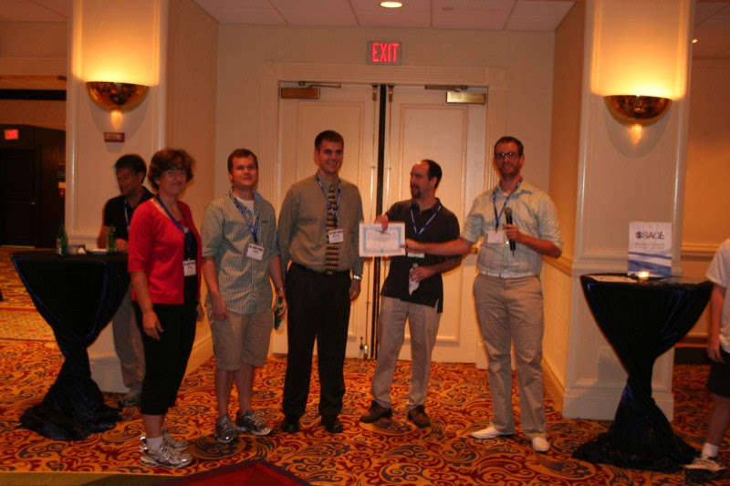
Questions provided
- When is the best time of day/day of week/time of year to fly to minimise delays?
- Do older planes suffer more delays?
- How does the number of people flying between different locations change over time?
- How well does weather predict plane delays?
- Can you detect cascading failures as delays in one airport create delays in others? Are there critical links in the system?
- but participants could also decide for themselves what to analyse.
Remember: Start with a question
About the data
- nearly 120 million records
- 12Gb of space uncompressed
- 1.6Gb compressed
Organisers provided instructions on how to set up an sqlite database, and access from R.
Read about accessing databases from R at this RStudio site is a good starting place to read about working with a sqlite database.
The original data source
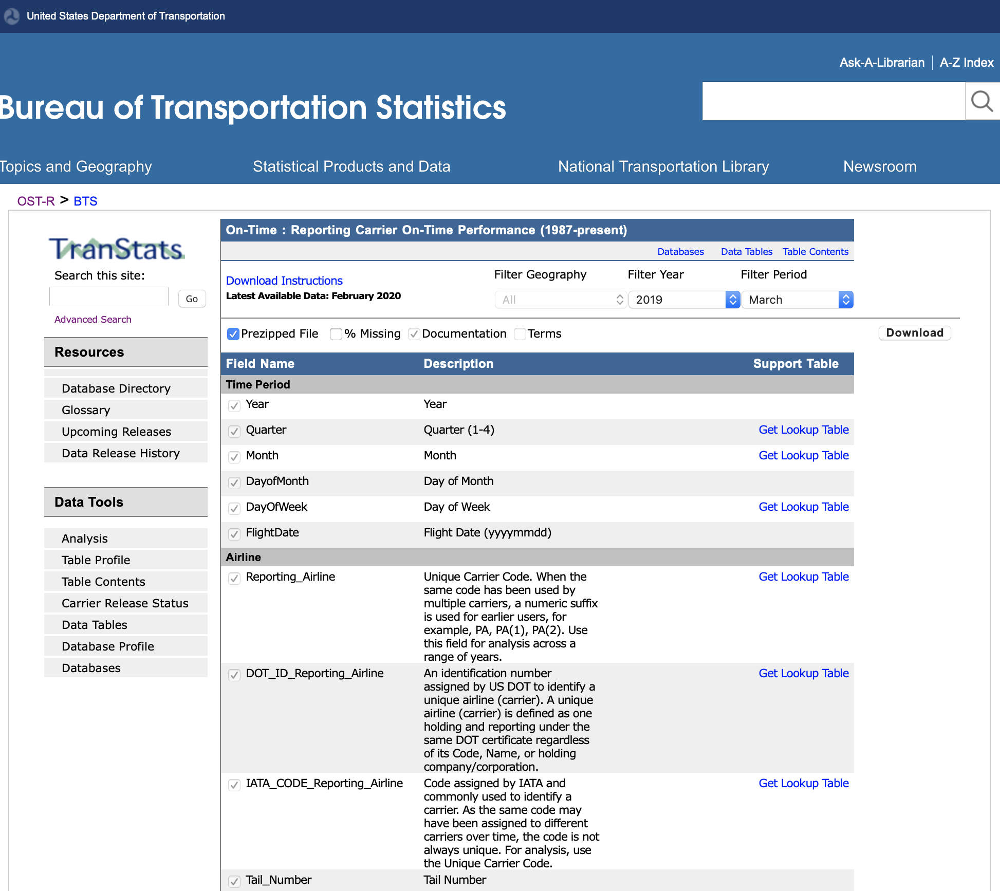
You can find the most current data here
Look at the “On-Time Performance 1987-present” table.
You can download data a month at a time
There is a lag in records appearing on the site, currently of several months
Data dictionary/explanations the variables
Links at bottom of the site tells you what web site collects on you when you visit (Privacy Policy), but there is no clear license or policy on usage.
Accessing the data
- Data expo files: the data for the competition is still available because it was given a DOI: https://doi.org/10.7910/DVN/HG7NV7. 🤸
- Navigating the BTS web interface
- What data is available
- How do you download
- Explanations of the records and variables
- R package
nycflights13: provides a small domesticated data set.🐨 This is a good way to dip your toes in the water with the airline data - try this as a start before working with the full data.
What does the data look like?
library(tidyverse)
# Careful with file name here - and this dataset should only contain Jan 2020 data
flights_jan2020 <-
read_csv(here::here("data/T_ONTIME_REPORTING.csv"))
flights_jan2020 |>
select(FL_DATE, OP_UNIQUE_CARRIER, TAIL_NUM, ORIGIN, DEST, DEP_TIME, ARR_TIME, ARR_DELAY) |>
slice_head(n=10)# A tibble: 10 × 8
FL_DATE OP_UNIQUE_CARRIER TAIL_NUM ORIGIN DEST DEP_TIME ARR_TIME ARR_DELAY
<chr> <dbl> <chr> <chr> <chr> <chr> <chr> <dbl>
1 1/1/2020… 9 N131EV DSM MSP 1347 1445 6
2 1/1/2020… 9 N131EV MSP CVG 1540 1810 -40
3 1/1/2020… 9 N131EV MSP DSM 1215 1319 39
4 1/1/2020… 9 N132EV LGA ORF 1556 1702 -29
5 1/1/2020… 9 N133EV CVG DTW 1722 1829 -25
6 1/1/2020… 9 N133EV DTW CVG 1221 1323 -25
7 1/1/2020… 9 N133EV DTW ROC 2011 2119 -34
8 1/1/2020… 9 N133EV SYR DTW 0709 0824 34
9 1/1/2020… 9 N134EV ATL AVL 1206 1300 -14
10 1/1/2020… 9 N134EV ATL BHM 0847 0833 -16- What’s in a row?
- What type of data collection is this? (e.g. experimental or observational? Census, survey sampling or occurrence?)
How would you start to process the data to answer …
- When is the best time of day/day of week/time of year to fly to minimise delays?
- Are some carriers operating more efficiently?
- Do some carriers operate more broadly than others?
- Do older planes suffer more delays?
What did the prize winners do?
First prize 🏆 1

Overview
Its good practice to show a useful view of entire data, to get a rough sense of major patterns.
Temporal trend
A major component of this data is traffic patterns over time.
Spatial pattern
Airports are distributed across the country, explore how the traffic operates relative to this geography.
Carriers
Are some carriers operating more widely, or more efficiently?
Highlights
Overview
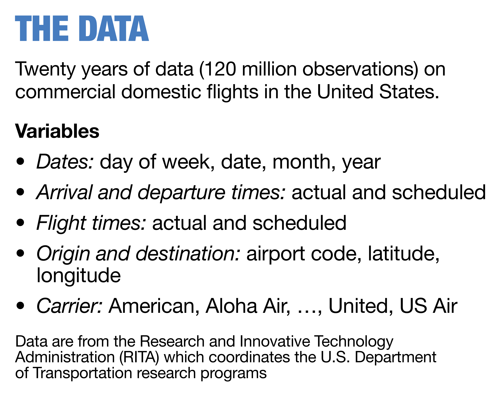
Overview

Overview

Think about it 🤔
Note
Delay was used in providing an overview.
- What other aggregates could have been used?
- Why was delay chosen?
Temporal trend

Temporal trend

Spatial
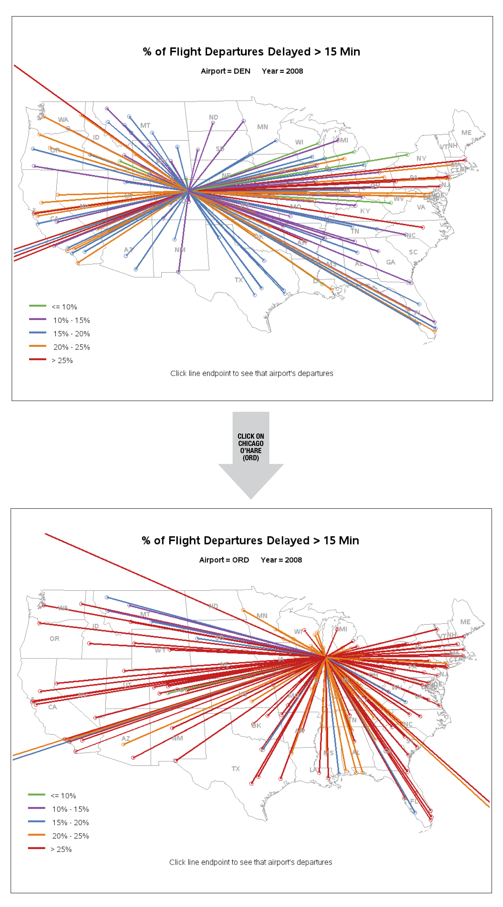
Carrier
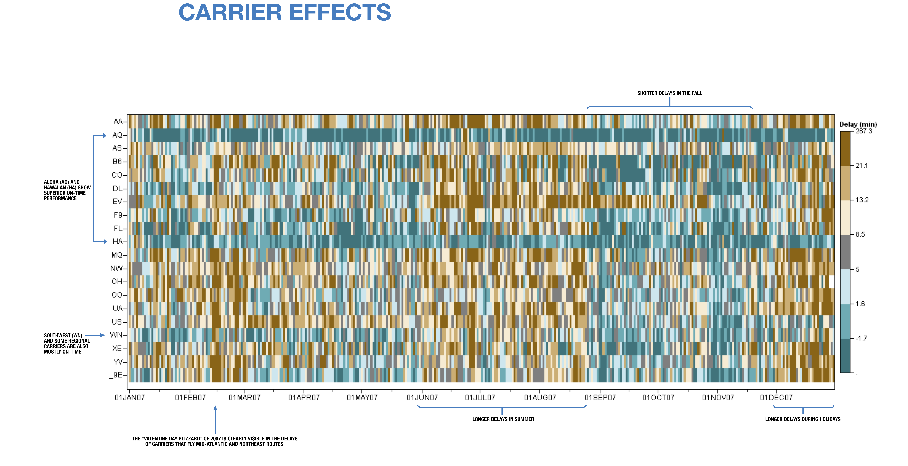
Highlights

Second prize 🏅1
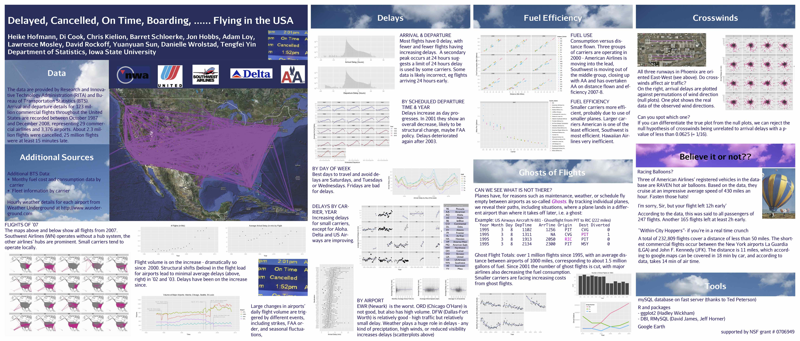
Analysis overview
- Overview: flight paths over country
- Analysis:
- Traffic patterns over time, including 911, and strikes, bankruptcies
- Delays over time, and by day, hour
- Airport efficiency
- Carrier efficiency
- Ghost flights: what’s a ghost flight?
- Mapping traffic spatially, and animating
- Curious findings
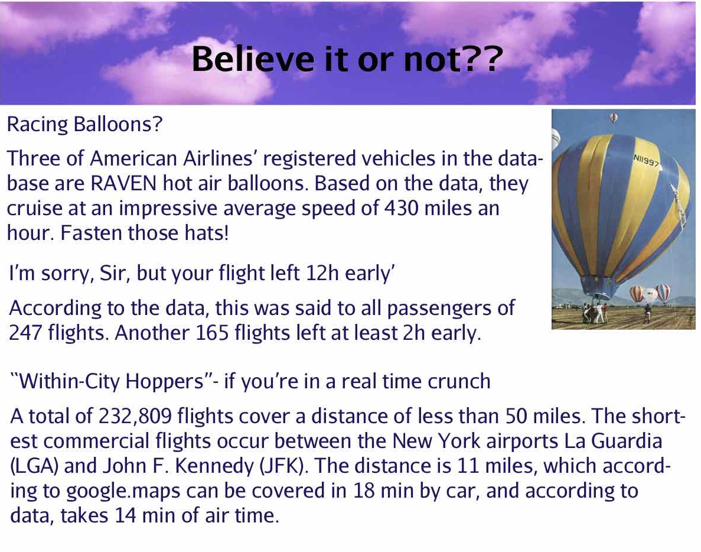
As we work through the summary plots, think about
Note
- what needs to be done to the data to get to this summary
- what do you learn from each display, what’s expected, what’s surprising
- what other ways might the same information be presented, or other calculations made
Traffic patterns over time
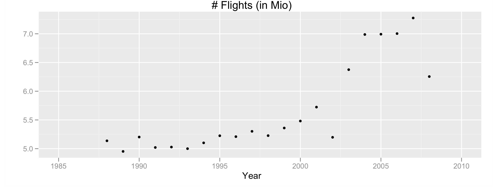
Number of flights in millions per year: steadily increasing volume until 2001, with a big drop in 2002. Volume recovered in 2003, and flattens 2004-7, with another drop in 2008. What happened in 2001? What was happening in 2008?
Traffic patterns at selected airports
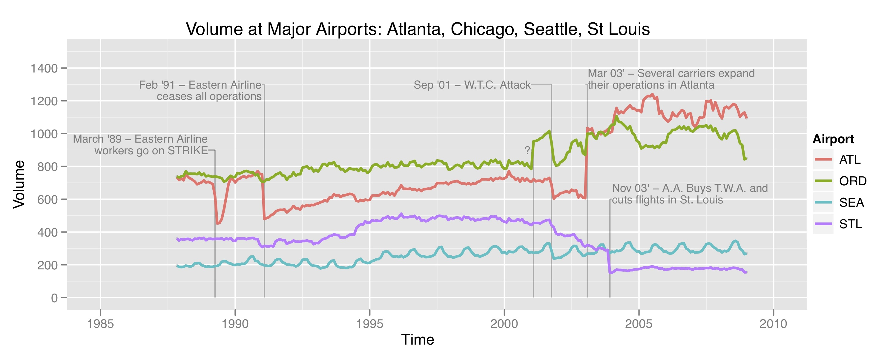
Delays

Delays, by year

Delays, by carrier

Delays, by airport
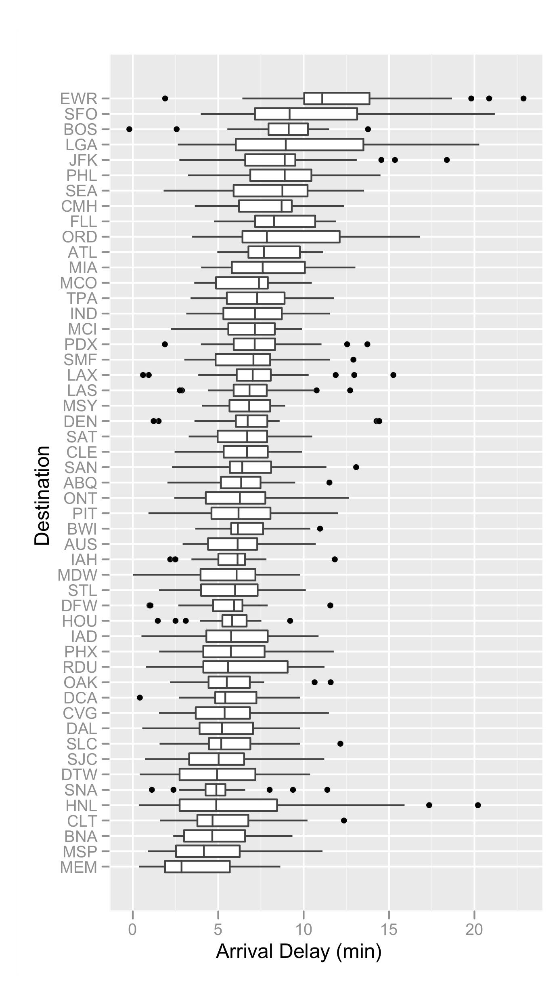
Delays, by day
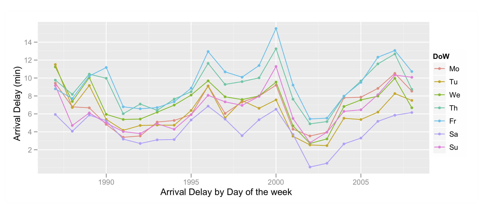
Fuel use by carrier
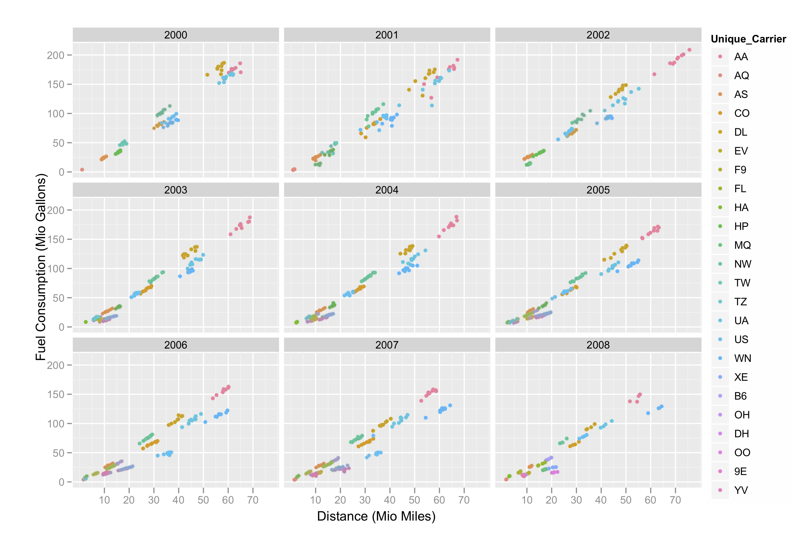
Fuel efficiency
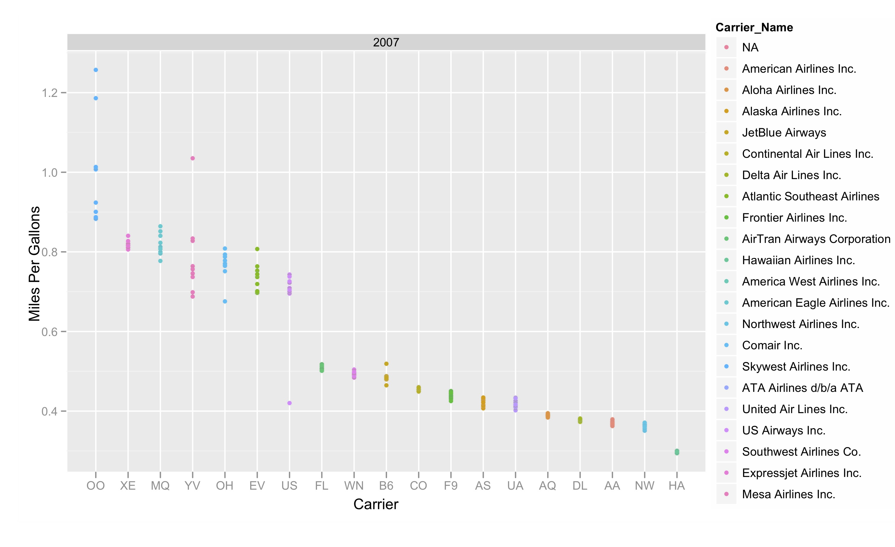
Ghost flights

Ghost flights, wasted fuel
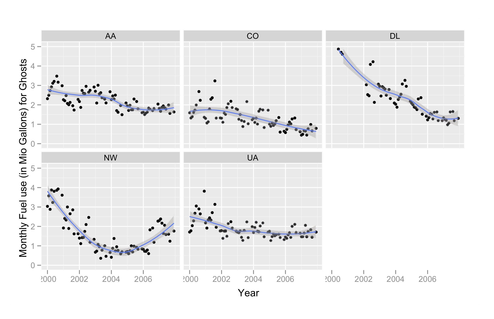
What tools were used and why
A subset of the analysis materials including data and code can be downloaded from the paper site
- sqlite database: Inspired by the guidelines provided by the organisers we created a
mysqldatabase, on a central server that all team members could access with a password. Each person accessed the data through R. - R packages:
RMySQL,DBI,ggplot2
Summary
Working with wild data can be daunting!
- Start with questions that might be answered using the data.
- Map out a pipeline to process the data, to address the question.
- Think about what might be expected, so results can be “externally validated”.


ETC5512